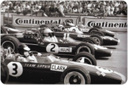
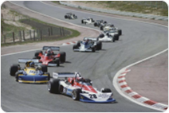
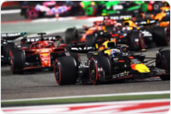

História da Fórmula 1
Quando começou a Fórmula 1

A Fórmula 1 foi criada como um Campeonato Mundial em 1950, com a primeira corrida realizada no Circuito de Silverstone – uma antiga base da Força Aérea Real – no Reino Unido, em 13 de maio daquele ano. Mais seis eventos foram realizados em uma temporada que viu o piloto da Alfa Romeo, Giuseppe 'Nino' Farina, se tornar o primeiro campeão mundial do esporte – superando seus companheiros de equipe Juan Manuel Fangio e Luigi Fagioli. Embora o automobilismo já existisse desde o final do século XIX, com os eventos de Grande Prêmio ganhando popularidade nas décadas seguintes, 1950 marcou o início do campeonato oficial de Fórmula 1, que permanece até hoje.
A evolução e a revolução
tecnológica

A década de 1960 marcou uma nova fase na história da Fórmula 1, caracterizada por grandes avanços tecnológicos e mudanças significativas na construção dos carros. As equipes começaram a utilizar motores na parte traseira dos monopostos, substituindo o tradicional posicionamento dianteiro e proporcionando melhor equilíbrio, aerodinâmica e desempenho nas pistas. Pilotos como Jim Clark, Graham Hill e Jackie Stewart ganharam destaque, conquistando títulos mundiais e protagonizando disputas memoráveis que ajudaram a popularizar ainda mais a categoria. Durante esse período, também surgiram importantes inovações, como o uso de asas aerodinâmicas, pneus mais largos e materiais mais leves na fabricação dos carros.
A Fórmula 1 nos dias atuais

Atualmente, a Fórmula 1 é considerada a principal categoria do automobilismo mundial, reunindo equipes e pilotos de diferentes países em um campeonato acompanhado por milhões de fãs. Com carros cada vez mais tecnológicos, a competição combina motores híbridos, aerodinâmica avançada e sistemas de segurança altamente desenvolvidos. Em 2026, a categoria iniciou uma nova fase, com monopostos menores e mais leves, aerodinâmica ativa, maior participação da energia elétrica e combustíveis sustentáveis. Além disso, a chegada da Cadillac ampliou o grid para 11 equipes, marcando mais um capítulo na constante evolução do esporte.